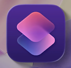

Widgets are shortcuts we can use to access our most used apps fast. We can stay updated on schedules, timers, and stopwatches. But to make your phone the most unique, WidgetSmith is a super app top look at!

Having a device is great, but certain features make it even better. Organization, decoration, and communication are all so important to using our technology to your best ability.
Widgets are shortcuts we can use to access our most used apps fast. We can stay updated on schedules, timers, and stopwatches. But to make your phone the most unique, WidgetSmith is a super app top look at!
Shortcuts is an Apple IOS app automatically downloaded on all devices. It is less well known, but you can use it to personalize almost everything on your device. My favorite way to use it is by changing the icons of my apps or creating routines such as automatically setting alarms, getting reminders, or changing your phone's mode. Once you master it, you unlock your device's full potential
